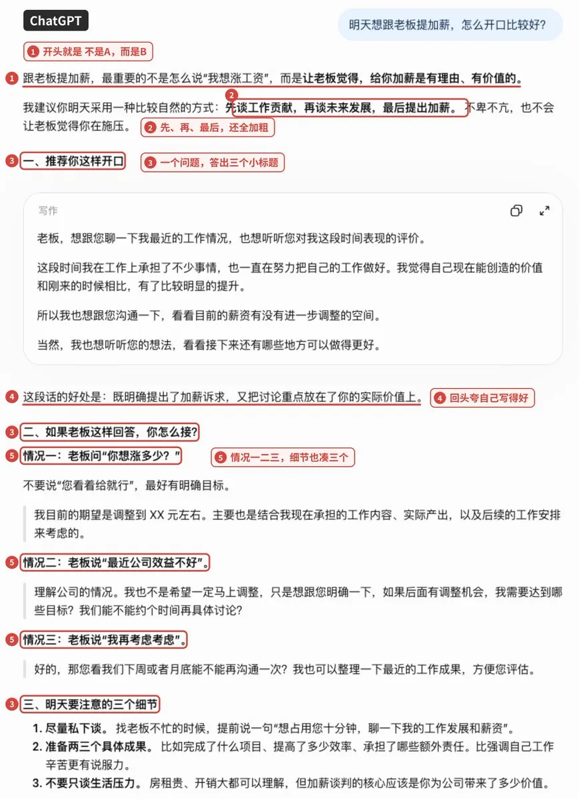
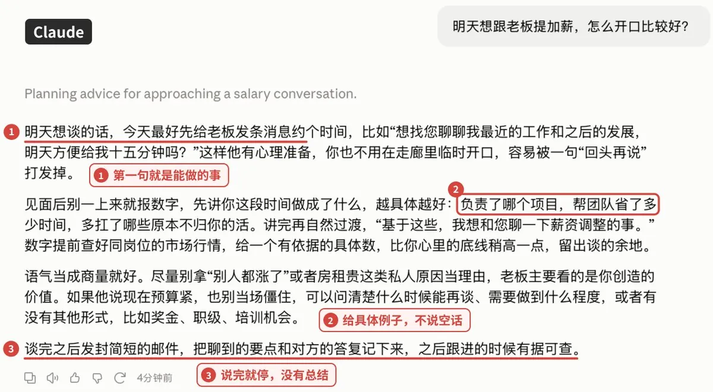
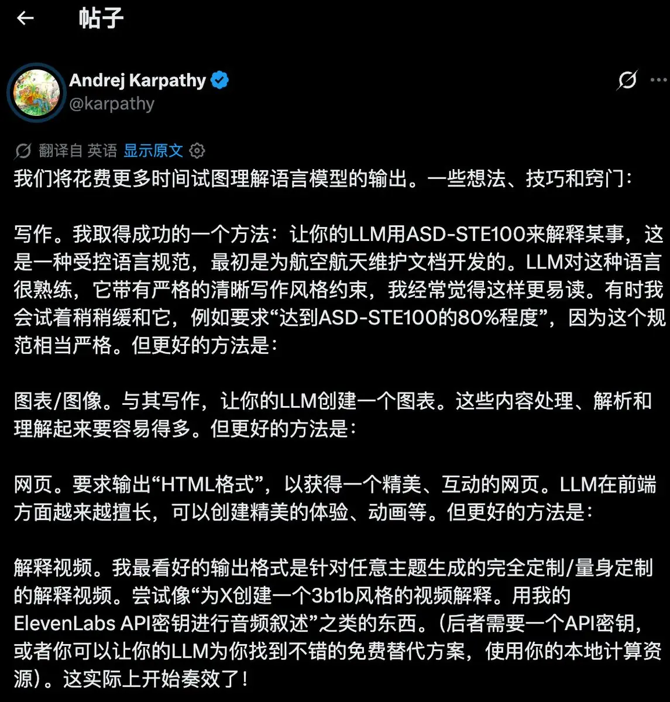
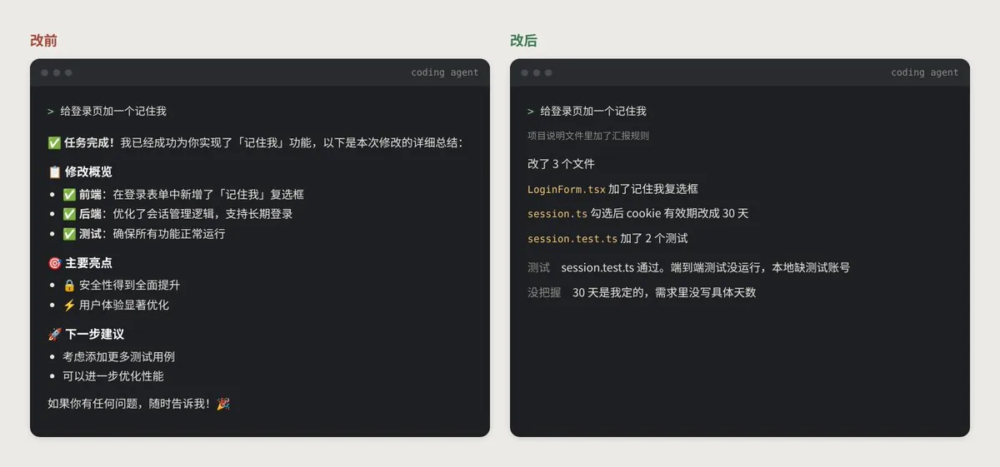
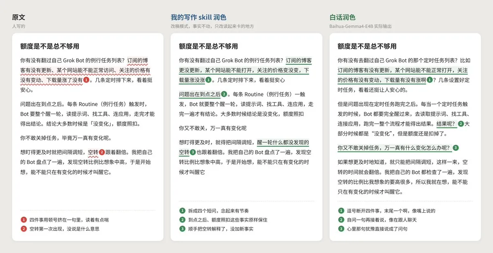

导读
作者情酱自述“用 AI 写了两年文章”，这篇长文想回答一个问题：模型越来越强，为什么说话越来越不像人？
文章先把“不说人话”分成两种。日常对话里，你要的那句话被埋在三屏小标题下面；写作里，句子没毛病，但读不出一个具体的人。接着用“模型往被奖励的方向长”解释成因：预训练留下平均和平淡，指令微调复制了范文作者的客套和翻译腔，偏好优化放大了长、格式、眼熟、附和、自信五种口味，评测又让厂商把力气花在能量化的推理和代码上。作者引用一位国内 AI 厂高管的两句话收束：问题出在对齐数据分布和评测，“核心是自然语言能力可以被正确的评测”。
后半篇给方法，两条线解法相反。日常对话要管住：提问时交代读者和决定、限格式字数、要求标出没把握、先挑错；长期规则写进自定义指令或 CLAUDE.md / AGENTS.md；借 Karpathy 推荐的 ASD-STE100（“做到八成”）让句子一句一事；已有稿子去腔用 shuorenhua，先保信息再谈风格。写作要放开：活人感先来自材料，再来自说话位置，最后才是语气；材料不够就去查、去回答三个问题，实在不够就写短；初稿后分七遍改，禁词表写完再用，润色模型之后要让另一个模型核对数字和条件。
值得一提的是，有读者在评论区问这篇是不是 AI 写的，作者回答“必然是 AI”，并补充做法是“200字的大纲➕我的写作 skill， opus5.5直出”。所以这篇文章本身就是它所讲方法的一次示范。
要点
- 两种“不说人话”要分开治。日常对话的病是“答案被埋”，治法是收紧；写作的病是“没有人”，治法是补材料、给立场。
- AI 腔是一路奖励攒出来的。四道工序：预训练（猜得准→平淡）、指令微调（像范文→客套、翻译腔）、偏好优化（人的口味→长、格式、眼熟、附和、自信）、评测（能量化的越练越强）。
- 系统提示是我们唯一能直接动的那一环。奖励信号和训练数据来源外人管不了，但你写给模型的要求和系统提示词可以改。
- 日常对话四件套：交代读者与决定（防铺垫）、限格式和字数（防长、防格式）、标出没把握（治自信）、先挑错（治附和）。
- ASD-STE100 的思路：一句一事、一词一义、主语和动作在前、常见词优先；对 agent 汇报尤其有用（先写改了哪些文件、哪些测试跑了/没跑）。
- 去腔先保信息：数字、条件、范围、否定、情态（可能/可以/会）、完成状态一个都不能动；默认只做五种删改，正常文字原样返回。
- 写作顺序：材料 → 说话位置 → 语气。一千多字的非虚构至少五件有来路的材料；警惕“凌晨三点的冷咖啡”式假细节。
- 改稿分七遍、一遍一事：谁在说 → 有没有往前走 → 去表演 → 中文通不通 → 清禁用项 → 核事实 → 看结尾；外加压缩试验和冷读两个小测试。
- 禁词表写完再用，交给脚本或人。塞进写作要求反而可能失效；模型自查套话的召回很低。
- 结论：AI 腔和“不敢说错”有关；要让模型整体会说话，得等厂商把自然语言能力测准。
我们核实到的情况
| 文中说法 | 核实结果 |
|---|---|
| Karpathy“这个月初”在 X 发帖，第一招是让模型用 ASD-STE100 解释，嫌太严就要“八成” | 属实。原帖发于 2026-10-02 08:37（UTC+8），原话是 “80% of the way to ASD-STE100”，后面依次是图表、HTML 网页、定制讲解视频，与文中转述一致。抓取时约 790 万浏览、5.6 万赞。 |
| ASD-STE100：53 条写作规则、约 900 个批准词；操作句 ≤20 词、描述句 ≤25 词；close 作形容词不批准，要写 near | 与公开资料一致（现行 Issue 8 的公开介绍）。规范全文需向 ASD 申请，我们没有逐条对照全文。 |
| 2025 年 4 月 GPT-4o 更新后过度谄媚，几天后回滚，复盘称主要因为加入了用户点赞点踩信号 | 属实。OpenAI 于 2025-04-29 宣布回滚，随后的复盘文章提到基于用户反馈（赞/踩）的额外奖励信号削弱了原有约束。“主要原因”是作者的概括，复盘原文列了多项因素。 |
| Claude 公开的系统提示不许开头夸用户问题好，要少用加粗、标题和列表 | 属实。Anthropic 公开的 Claude 系统提示里有“不以称赞问题好/有趣开头”和偏好散文、少用 Markdown 格式的指令。 |
| GPT-5.1 之后 ChatGPT 可以选 Efficient 等人格预设 | 属实。GPT-5.1 发布时加入了 Default / Friendly / Efficient / Professional / Candid / Quirky 等风格预设。 |
| 一千条左右示范就能定下助手的样子 | 有出处。对应 LIMA（2023）论文，用约 1000 条精选示范做指令微调。 |
| 分类器能以九成七准确率认出是哪家模型写的，改写、翻译后照样认得 | 有出处。对应 “Idiosyncrasies in Large Language Models”（2025），报告约 97% 的五分类准确率，改写/翻译/摘要后仍明显高于随机。 |
| Chatbot Arena 2024 年扣掉长度和格式影响再排名，名次变了 | 属实。LMSYS 2024 年 8 月推出 “style control”，控制长度与 Markdown 后多个模型排名变化。 |
| DeepSeek V3 刚发布时会自称 ChatGPT | 属实（2024 年底多家媒体与用户报告）。 |
| Llama 3 基座 vs 助手版的 -ing 分词尾巴：基座≈人，助手 2 倍多，GPT-4o 5 倍多；名词化助手版多一半 | 方向有出处（对应 Reinhart 等人比较 LLM 与人类语法修辞风格的研究），具体倍数我们没有逐项对照原表。 |
| 偏好优化的分数提升七到九成可用“变长”解释；GPT-4 当裁判时被选回答四成多带加粗 vs 不到两成；英译中近半翻译腔、参考译文四成翻译腔；只换系统提示拒答率差两倍多；模型自标套话不到人的三分之一 | 未逐一核实。文中没给论文链接。前两项能对上长度偏差、格式偏差方向的已知研究，具体数字我们没找到原表核对；后三项只能当作者转述。 |
| 白话：基于 Gemma 4 E4B，只用 144 组修改配对微调，本地可用 | 属实。模型卡写明底座 gemma-4-E4B-it、配对微调去重后 144 组（130 训练 / 14 验证），BF16 完整权重约 15.9 GB，Apache-2.0；模型卡也自承“仍可能改变时间、数字、否定条件”，与文中提醒一致。 |
| shuorenhua：先保信息再谈风格，分三档改动范围，千字以上长文默认中间档 | 属实。README 列有 structural / bounded / in-place 三档，“中文公开长文约 1000 字以上默认保留句段结构”；MIT，抓取时约 2.2k star。“五种默认改动”的具体条目在 skill 正文里，README 里没有逐条写出。 |
| human-writing：先问材料，按顺序改，自带检查脚本清破折号、翻案句、黑话 | 属实。README 描述的材料门槛和 check_prose.py 与此一致；MIT，v1.1.0，抓取时约 4.1k star。 |
| SimpleEnglish、asd-ste100-skill、Humanizer-zh 都能装进 Claude Code | 存在。文中没给链接，我们在 GitHub 找到同名项目：AminBlg/SimpleEnglish、danyuchn/asd-ste100-skill、op7418/Humanizer-zh（均 MIT）。是否就是作者指的那几个，无法完全确定。 |
| “国内一家 AI 厂的高管”的两句话 | 无法核实。只有作者打码的聊天截图。 |
推文全文
用 AI 写了两年文章，我整理了一套让AI说人话的焚诀
从 AI 腔是怎么被训练出来的讲起
到提示词模板
系统提示词
写作流程
彻底杀死所有AI味 [X 文章]
X 长文全文：怎么让你的AI说人话？我整理了一套公式化方案
你肯定见过这种回答
问它一个报错怎么办，它先夸你问得好，再列出可能涉及的四个方面，每个方面配一个加粗小标题，最后来一句建议从多个维度排查。三屏看完，你还是不知道该改哪一行
让它帮你写段文案，它给你的就是“在这个快速变化的时代，每个人都在寻找属于自己的答案”这种话，挑不出错，读完也没留下什么价值
很多模型还有自己的一套口头禅。不是...而是...，最直白最不绕弯子，一句话总结。写到抒情的地方，爱情是量子纠缠，分手是熵增
拿一个最普通的问题试试，同样丢给 ChatGPT 和 Claude


ChatGPT 交回来一份文件，三个小标题、三种情况、三个细节，第一句就是不是 A 而是 B。Claude 四段话说完，第一句就告诉你今天先约时间
模型之间确实有差别。我自己的体感是，Claude 和 Gemini 写文字读着顺一些，国内模型的口头禅最多，gpt的AI味最浓
但换哪个模型，AI味都在，只是轻重不一样
我经常拿AI写作，被这股AI味烦了很久，这次干脆把它从头到尾查了一遍
看完这篇，你会知道它是怎么被一步步练出来的，也会拿到一整套让 AI 好好说话的办法
不说人话，有两种
开头那两种回答，其实是两种不说人话，后面所有的事都会分成这两条线
第一种是日常对话。问个问题，让它总结一下，帮你写封邮件，agent 跟你汇报进度。这里的不说人话，是你要的东西被埋起来了，就像那个三屏的报错回答
第二种是写作。公众号、推文这些，你要发出去给人读的东西。这里的不说人话，是句子都没毛病，但读不出一个具体的人，就像那句快速变化的时代，换谁来写都一样
日常对话里，你要的是一句能照着做的话，它给了你三屏。写作里，你要的是读出一个人，它给了你谁都能写的句子。两种毛病大部分是同一个原因养出来的，但治的时候得分开治
AI 腔是怎么练出来的
从第一性原理说，模型只会做一件事，往被奖励的方向长。AI 腔，就是一路上被奖励的东西攒出来的
一个聊天模型大概要过四道工序，每一道奖励的东西不一样
第一道是预训练。模型读海量文字，练习猜下一个词，猜得越准越好。它学会的是什么说法最常见，所以天生有点平淡
汇报腔是后面才加上的。有研究拿同一个 Llama 3 的两个版本跟人写的文字比。英文里有种写法，句子说完了再拖一个 ing 尾巴，比如 highlighting the importance of，强调了什么什么的重要性，几乎是英文 AI 腔的标志。只做过预训练的基座版用这种写法的频率跟人差不多，教成助手以后涨到人的两倍多，GPT-4o 是五倍多。完成了对流程的优化这种把动作写成名词的说法也一样，基座版比人用得还少，助手版比人多一半
第二道是指令微调，找人写一批示范回答，模型照着学。这本范文集不用厚，一千条左右就能定下助手的样子。写范文那批人的习惯，开头先说好的、复述一遍你的问题、结尾问还需要什么帮助，就这样被复制进了之后的每一个回答
中文的翻译腔也是这一步带进来的。有研究发现，大模型的英译中将近一半读着有翻译腔，而它学翻译用的参考译文里，四成本身就是翻译腔
第三道是偏好优化，AI 腔主要在这里被放大。模型对同一个问题写两个回答，人选更好的那个，模型就往人选的方向改。问题是人打分有几样很稳定的偏好
一是长。长的回答看着更用心，偏好优化带来的分数提升，七到九成可以只用回答变长来解释。你问一个简单问题，它也要写满三屏
二是格式。加粗和列表看着有条理，用 GPT-4 当裁判时，被选中的回答四成多带加粗，没被选中的不到两成
三是眼熟。看着顺的写法分高，模型就越写越像同一个模子
四是附和。2025 年 4 月 GPT-4o 一次更新后变得特别会拍马屁，OpenAI 几天后就回滚了，复盘时说主要原因是加进了用户点赞点踩的信号。它开口就是好问题、你说得对，也是这么来的
五是自信。含糊的回答分低，所以模型很少说我不确定，哪怕它自信给出的答案里有将近一半是错的
第四道是评测，它决定厂商下一步往哪练
之前和国内一家 AI 厂的高管聊天，我问了他差不多就是这篇文章的问题。AI 能力越来越强，为什么越来越不说人话，从技术上怎么理解
他回了两句
第一句是，主要是对齐的数据分布和评测。因为推理和 coding 非常容易量化，导致大家越来越倾向于优化这些
第二句是，核心是自然语言能力可以被正确的评测
推理和代码有标准答案，对就是对，分数一算就出来，厂商当然往这上面使劲。一段话像不像人没有标准答案，只能交给人或者模型去打分，打分的口味又是上面那几样。排行榜也逃不掉，Chatbot Arena 2024 年把长度和格式的影响扣掉再排名，好几个模型的名次一下子变了
量化得了的越练越强，量化不了的，就交给了打分的口味
放回两条线上看。日常对话吃的是范文里那套客套，加上长、格式、附和、自信这几样偏好。写作吃的是预训练留下的平均，加上眼熟这一样偏好
为什么换个模型，腔调也不一样
四道工序各家都走，腔调轻重不同，差在每一道奖励什么。各家具体怎么训练外人看不到，从公开信息能看出三处
一是系统提示，就是聊天产品在你看不到的地方写给模型的那段话。Claude 公开的系统提示明写着不许开头夸用户问题好，要少用加粗、标题和列表。OpenAI 的规范也反对辞藻堆砌，但默认输出仍然是带标题和列表的 Markdown。有研究只换系统提示，同一个模型拒答正常问题的比例就能差出两倍多
二是奖励信号。GPT-4o 那次就是例子，点赞一进奖励，腔就往讨好那边走
三是跟谁学。有研究训练的分类器，能以九成七的准确率认出一段话是哪家模型写的，改写、翻译之后照样认得出。拿谁的输出当训练数据，就带着谁的腔。早一代国内模型跟着 GPT 学过，DeepSeek V3 刚发布时还会自称 ChatGPT
后两条我们管不了，第一条可以。系统提示能决定模型怎么说话，你自己写给它的要求也能。后面的方法，大部分都从这里出发
原因聊完了，下面是这篇文章真正想讲的部分
日常对话和写作的解法正好相反。日常对话要管住，让它少说、说准。写作要放开，让它敢写具体的、有立场的东西。先说日常对话，它更简单，改几句提示词就能立刻见效
日常对话，怎么办
日常对话这半，目标就一个，让你要的那句话出现在最前面
最省事的办法，是提问的时候多写几行，先交代清楚读者是谁、读完要做什么决定
读者是谁，他读完要做什么决定
第一句写这个决定需要的信息
不用标题、列表和加粗，150 字以内
没把握的地方直接标出来
先指出这个方案最可能出错的地方每一行都对着前面一个偏好。交代读者和决定，它就没法铺垫。限格式和字数，管的是长度和格式偏好。要它标出没把握，是治自信。让它先挑错，是治附和
同一个报错，加不加这几行，差别大概是这样
左边四个层面、四个小标题，最后再来一句从多个维度排查。右边第一句就是该改什么，没把握的部署平台也直接问了你
每次都打一遍太累，可以一次写进设置里。ChatGPT 的自定义指令，Claude 的个人偏好，都能放长期规则。GPT-5.1 之后，ChatGPT 还能直接选 Efficient 这类比较克制的人格预设。可以参考这几句
默认用段落回答，除非我要，否则不用标题、列表和加粗
不要夸我的问题，不要复述问题，结尾不要总结
回答长度跟问题匹配，简单问题一两句话就够
不确定就说不确定上面这些只管格式和语气。想让句子本身变清楚，可以借一个航空业的老标准，叫 ASD-STE100
Karpathy 这个月初在 X 上发了一条帖子，第一句就是，我们会花越来越多的时间去理解语言模型的输出
他分享的第一招，就是让模型用 ASD-STE100 来解释东西。模型对这套规范很熟，写出来他常常觉得更好读。嫌太严的时候，他会退一步，只要求做到 ASD-STE100 的八成

帖子后面他还往前推了三步。比写字更好的是让模型画图，再好一点是让它直接生成能交互的网页，他最看好的是给任意主题量身定做的讲解视频。这几样都挺有意思，但日常对话里最常用的还是文字，先把字写清楚，门槛最低
回到 ASD-STE100，很多朋友可能没听过。上世纪 80 年代，欧洲航空业发现，飞机维修手册是英文写的，但很多维修人员英语不是母语，读错一个步骤就可能出事。于是定了一套受控英语，叫简化技术英语
现在的版本有 53 条写作规则，大约 900 个批准词。每个词只许有一个意思、一个词性，操作步骤的句子不能超过 20 个词，描述的句子不能超过 25 个词，用主动语态，一句话只写一个动作。举个例子，close 当形容词用是不批准的，你得写 near，因为 close 已经被拿去表示关上了
把这套规则和前面那些训练偏好放在一起看，挺好笑的。训练把模型推向越写越长，它给句子设了上限。模型爱为了不重复换同义词，它要求一个词一个意思。模型爱把几件事塞进一句话，它要求一句只写一个动作
四十年前的规矩，刚好对着今天的 AI 腔
用法很简单，不用装任何东西，在提示词里加几句就行。第一行就是照 Karpathy 那个八成的说法写的。STE 只有英文版，中文借它的思路
按 ASD-STE100 的八成来写
一句只写一件事
同一个东西始终用同一个词
主语和动作放在句子前面
能用常见词就不用术语效果大概是这样，下面是一段周报的示意
改前，本周针对用户反馈的登录问题进行了深入分析与排查，并对相关模块实施了一系列优化措施，整体体验得到显著提升
改后，本周查了用户反馈的登录问题。相关模块改了几处。登录体验好了不少
信息一点没多，只是一句只写一件事，动作也从名词变回了动词
嫌每次都要写，可以把这几行直接放进系统提示词里，ChatGPT 的自定义指令、Claude 的个人偏好都行，之后每次对话都会自动带上。也有人把它做成了 skill，SimpleEnglish、asd-ste100-skill 都能装进 Claude Code 里用
STE 最适合的场景，我觉得是 agent。Claude Code 会读项目里的 CLAUDE.md，Codex 会读 AGENTS.md，把汇报规矩写进去，每次就不用再交代
汇报规则
一行只写一件事
先写改了哪些文件，再写哪些测试运行了、哪些没运行
没把握的地方单独列出来
不写总结，不用表情
左边那句确保所有功能正常运行，看着很放心。右边一写清楚，端到端测试其实没跑，30 天这个数也是它自己定的。打勾总结的问题就在这，没做完的事也被包装成了做完
agent 之间互相传的指令也一样。asd-ste100-skill 推荐的用法里，就专门列了 agent 之间的指令和工具描述
日常对话里还有一种情况，AI 已经写好了一段周报、一封邮件、一份进度说明，你想把腔去掉。这时候我推荐 shuorenhua 这个 skill 的思路，地址是 github.com/MrGeDiao/shuorenhua。它整套规则就围着一件事转，先保信息，再谈风格
为什么要这么小心，因为去腔最容易出的事，是把意思改了
它列了一张要保住的清单，谁做了什么，数字对应的是什么，条件，范围，否定，可能、可以、会这种语气的差别，事情是做完了还是在做，谁比谁好多少。这些东西哪怕藏在客套话和宣传口气里，也要原样留下
在这个前提下，它默认只做五种改动。删掉纯客套，比如招呼、致谢、没有具体内容的预告。删掉只提示写法的成分，比如值得注意的是、简而言之，留下它引出的内容。删掉完整重复的话。把名词化的写法改回动词，完成了对配置的检查，改成检查了配置。删掉没有依据的身份吹捧，比如你已经达到资深专家的水平
这五种以外，默认都不动
举个例子，下面是一段示意
改前，值得注意的是，本周我们完成了对登录流程的优化，平均耗时从 3.2 秒降到 1.8 秒。总的来说，登录流程已经优化过了
改后，本周优化了登录流程，平均耗时从 3.2 秒降到 1.8 秒
删掉的是写法提示、名词化和最后那句重复。两个数字一个都不能动，也不能改成登录快了很多，更不能自己算出一个百分比加上去
再比如，经理批准以后，我可以周五前交初稿。这句话看着有点啰嗦，但经理批准这个条件、可以这个语气，一个都不能删。改成我周五交初稿，就从一个有条件的可能，变成了一个承诺
它还按稿子长短分了三档改动范围。可以自由删改重排的，只在句子内部清理、不删整句的，只在原位替换、句数都不变的。一千字以上的长文默认用中间那档，免得模型借着润色把你的稿子重写一遍
最后一步是交付前逐句对照，原文有、改稿没了的意思，除非确实是重复，就放回去。拿不准就撤销那处改动
我最想学的是它很克制。正常的文字可以原样返回，没把握就别改
写作，怎么办
写作就难一些，改几句提示词不够。有一个排序我很认同，活人感首先来自材料，其次来自说话位置，最后才是语气
所以去 AI 味，别急着让模型口语一点、加点语气词。材料不够的时候，语气词只会让 AI 味更重
下面就按这个顺序来
先说材料。模型手里没有你的事实，就只能写平均句子。专业作者改 AI 写的文字，删得最多的之一就是多余的解释。多余的解释，往往就是因为没东西可写
可以给自己定一个很硬的门槛。准备写一千多字的非虚构文章，动笔前至少要列出五件具体材料，每件都要说得出来路。五件材料还得能串成一件实际发生的事，不能是五句挨在一起的道理
什么算材料，你自己的经历、事实、数字、动作、判断，别人的原话，查到并且能核实的案例和数据。什么不算，模型临时编的比如有个人，没有来源的典型场景，常识推出来的后果，比喻，同一个意思换个说法
最常见的错误是，手里只有三条抽象想法，却要写四千字。于是每条都补上用途、意义、风险和未来，写成十几段。读起来很满，其实手里还是只有三条材料
材料不够的时候，只有三条路。能查的先去查。要你自己经历的，就先回答三个问题，你跟这件事发生过什么关系，哪个瞬间或数字最让你在意，你现在最想说的判断是什么。实在找不到，就把文章写短
宁可短，也别拿假例子和重复解释填满
给模型的时候，可以这样写
只用下面这些材料写，没有的不要补
1. 一个具体的事实或数字，以及它从哪来
2. 一个你亲眼看到或亲手做过的场景
3. 一句别人的原话
4. 你自己的判断，哪怕可能是错的
5. 一个你还拿不准的地方最后一条特别容易被忽略。模型被训练得很少承认不确定，你主动把拿不准的地方交给它，它就不用替你装笃定
材料够了，接下来是说话位置。同样的材料，谁在说、为什么现在说，写出来完全不一样。动笔前把这几个问题想清楚，再一起交给模型
谁在说这件事，他凭什么知道，哪些地方只是推测
什么事情让他现在想说
手里有哪些东西能撑住文章，动作、数字、时间、原话、失败、代价
他对哪一点有明确判断，依据是什么，到哪里为止
读者看完上一段，最自然会追问什么最后一个问题挺管用。文章往下走，靠的是回答读者刚冒出来的问题，不靠更深一层、真正的问题是这类路标
写第一稿的时候，盯住三件事就够了
一是每个新段落都要带来一件新东西，可以是一个事实、一个动作，也可以是一个例子或者一个后果。同一个观点换个说法，不算往前走
二是主语和动作先出来。那些真正能把 AI 用好的人，往往是，这种句子读到一半还不知道谁干了什么。改成会用 AI 的人，后面直接写他做了什么
三是事情讲完就停。不要强行升华，不要最后一段把全文再总结一遍
还有一个特别常见的坑，假细节。凌晨三点、桌上的冷咖啡、窗外的雨，这些没有来源的画面，越具体 AI 味越重。让人相信的是信息的来路。你在哪儿知道这件事，一开始哪里想错了，哪条材料让你改了主意，哪一块到现在还拿不准
开头写不顺的时候，可以让模型多给几个版本
给我 5 个不同写法的开头，每个标上你估计它出现的概率前面说过，打分的人偏爱眼熟的写法，所以模型标的概率最高的那个，往往就是最套路的那个。从概率最低的两三个里挑，离 AI 腔会远一点
初稿出来以后，改稿最好分七遍，一遍只看一件事。我觉得最值钱的是这个顺序本身
先看谁在说，找出哪几段换一个模型也能原样写出来，这种段落优先改，改不了就删。再看文章有没有往前走，给每段标一个作用，事实、动作、解释、例子还是判断，连续几段都在做同一件事，就是在拖。然后去掉表演，单独截图很好看、放回正文什么也没增加的句子，大多删掉。再读一遍中文通不通，主语是不是来得太晚，一句里是不是堆了好几个的。然后才清禁用项，破折号、成串的加粗、硬凑的三个并列、先立一个没人说过的误解再推翻它的翻案句。最后核对事实，再看结尾
句子层面的清理排在第五遍，前面四遍都在看文章有没有人、有没有东西
另外有两个小测试很好用
一个是压缩试验。删掉三分之一，如果事实、动作和判断几乎没变，原稿就是在注水，留删短的那版
一个是冷读。忘掉所有规则，只问自己，哪里让我相信作者真的知道这件事，哪一段像人在处理问题，哪一段像模型在完成任务，哪句话说得比材料大，文章在哪一句其实已经结束了
清禁用项这一步，最好交给脚本或者人自己来。让模型自己标套话，它标出来的连人能标出的三分之一都不到
还有一点，禁词表要在写完之后用，别塞进写作要求里。明确告诉模型别用破折号，有的模型照用不误，禁的东西一多，效果还会往下掉
表达这一步，也可以交给专门的润色模型。比如白话，基于 Gemma 4 E4B，只用 144 组修改配对微调过，本地就能用，模型在 huggingface.co/Roland-Wayne/Baihua-Gemma4-E4B。它的分工很清楚，事实和观点交给上游，它只负责写成口述感的正文
这也正好印证了前面那件事。几百条示范能教会模型一种声音，也能把它往回拉
但这类模型有个通病，润色的时候可能把时间、数字、否定条件一起改掉。所以流程最好是，先把事实和提纲整理好，再交给润色模型，最后让另一个模型帮你对一遍
把下面两段文字里所有的数字、日期、人名、否定词和条件词逐条列出来，标出两段不一致的地方去腔改错一个数字，比留一句套话糟糕多了
拿一段我自己写的文字试了一下，三个版本放在一起

我的 skill 改得很克制，顿号挤在一起的四件事拆成了短问，第一次出现的空转顺手解释了一下。白话的口语感最强，多了比如、啊、呢，还会先自问一句结果呢再往下说。这一段两边都没改错事实，但白话的模型卡自己也说了，不是每段都能这么稳
当然，上面这一套不用每次都手动过一遍，你也可以直接用 skill
我最推荐的是 human-writing，上面不少思路就来自它。它会先问你手里有没有东西可写，材料不够就先查、先问，实在不够就让你写短。初稿出来以后，它按顺序改，最后用自带的检查脚本清掉破折号、翻案句和商业黑话。装起来也简单，把 github.com/KKKKhazix/human-writing 发给 Claude Code 或 Codex，让它自己装就行
如果只是想给一篇写好的稿子去去腔，可以用 Humanizer-zh，它照着一份 AI 写作特征清单逐条清理，上手最快。担心改的时候把数字和条件改错，就换成前面说过的 shuorenhua
最后
也有人觉得，我们对 AI 腔有点过敏了
破折号就是个例子，很多人因为爱用破折号被怀疑是 AI 写的，冤得很。格式对快速扫读也确实有用，偏好优化也让模型在没见过的任务上表现更好。腔是代价，不全是坏事
只是这个代价，现在每个读者都在替它付
写到最后，我越来越觉得，AI 腔跟不敢说错有很大关系。每一步训练都在奖励稳妥、眼熟、讨喜的回答，一句带棱角、可能被人反驳的话，在打分的时候很难占到便宜
人敢说错，所以人写的东西才有人味
再回到那位高管的话，核心是自然语言能力可以被正确的评测。真要让模型整体变得会说话，还得等厂商把这件事测准
作者在评论区的补充
作者没有发自回复长串，只在评论区回答了 3 条提问，照录如下：
问：那么这篇是 AI 写的还是你写的
答：必然是 AI
问：如果你这一篇是 AI 写的话也调教的太好了！
答：200字的大纲➕我的写作 skill， opus5.5直出
问：你实测下来，是在系统提示词里一次性约束效果好，还是写完再单独让 AI 改一遍去味效果好？
答：后者质量肯定更高，日常表达相关放在系统提示词
引用这条帖子的 6 条帖子里，主要是转发推荐和读者自己的经验（如“先把调教好的文章和口述笔记喂给 AI，别让 AI 直接写文章”），没有新的事实信息。
文中提到的工具
- shuorenhua（说人话） · MrGeDiao · MIT。给已写好的稿子去腔，核心是“先保信息，再谈风格”，正文见附录一。
- human-writing（活人感写作） · KKKKhazix · MIT。从材料门槛到七遍改稿的写作 skill，作者最推荐，正文见附录二。
- 白话 Baihua-Gemma4-E4B · Roland Wayne · Apache-2.0。模型卡的定位是“上游模型或作者提供事实、观点和提纲，由白话将其写成正文”；训练用了“144 组”配对，“44 组包含人工修改”。模型卡自己写明：“它仍可能改变时间、数字、否定条件、因果关系和判断强度”，“不是可靠的事实核验系统，也不承诺通过任何 AI 文本检测器”。完整权重约 15.9 GB，作者在 Ryzen AI Max+ 395 上用 Ollama 测得约 9.75 tokens/s。
- ASD-STE100 相关 skill：SimpleEnglish、asd-ste100-skill（README 推荐用于 agent 之间的指令和工具描述）；另有中文对应物 asd-ste100-skill-zh（文中未提及，供参考）。
- Humanizer-zh · op7418 · MIT。照 AI 写作特征清单逐条清理，上手快，但作者提醒担心改错数字时换用 shuorenhua。
附录一：shuorenhua README 正文
来源 github.com/MrGeDiao/shuorenhua（v2.6.0，2026-10-19 抓取）。原文即中文，MIT 许可，© MrGeDiao。略去徽章、Star 曲线和英文段落，其余照录。
说人话：中文 AI 味清理 skill
说人话是一个中文优先的文字编辑 skill，用来清理套话、重复铺垫和生硬句式。数字、条件、承诺和作者本来的意思要保留；正常文字可以不改。
适合改 README、Release Note、工作同步、issue 回复和个人文章，也支持英文与只标问题。它不判断文章是不是 AI 写的，不提供“AI 含量”或规避检测的保证。
v2.6.0 已发布。 新增写平实：明确说「别吹」「写平实点」时，可以降掉「完美」「极致」「前所未有」这类夸饰，删掉「无需妥协」这类口号，承诺、首次、数字和术语照样保留。默认编辑规则与 2.5 相同；范围、结果与限制见评测记录。
怎么用
把原文交给支持加载 skill 的工具，然后说明要求：
把这段去掉套话，保留信息和我的口气：……
只在句内改，不删句、不并句：……
别吹，写平实点：……
只标问题，不改写：……
默认交完整改写稿，不附判定链和评分。不需要修改时返回原文；来源提示和删除建议放在正文后。
例如，原文是：
本次完成了对重试策略的调整。重试策略已经调整过了。重复请求从 24 次降到 7 次。
可以改成：
本次调整了重试策略，重复请求从 24 次降到 7 次。
但“得到批准后，我可以周五前交一版草案”里的条件、“可以”和交付动作都要留下，不能顺手改成确定承诺。更多对照见示例。
写平实（v2.6）
明确要求去掉宣传、吹捧的语气时，比如说「别吹」「写平实点」「去掉营销味」，会额外做两件事：把只表示程度的夸饰降成平常说法，删掉不交代任何内容的口号。
这款记账软件采用全新一代同步引擎，带来极致流畅的体验，真正做到无需妥协。它是国内首个支持离线多人协作的记账工具，导入旧数据无需手动整理，同步速度提升了 3 倍。
改成：
这款记账软件采用新一代同步引擎，用起来很流畅。它是国内首个支持离线多人协作的记账工具，导入旧数据无需手动整理，同步速度提升了 3 倍。
听起来很强、但带着内容的说法照样保留：承诺（「无需修改代码」）、可核查的「首个」「最常见」、效果幅度（「大幅降低成本」）、上下文事实撑得住的程度、作者在论证和叙述里的评价，以及引语和术语。只许降调，不许加强。只说「去 AI 味」「改狠一点」不会打开这项。
已知局限：Claude 偶尔会把正常叙述里的评价词一起弱化，测试中把新闻里的「慷慨捐助」改成了「捐助」；紧挨着具体声明的「无缝」常被保留。
v2.5 改了什么
运行规则收为三个文件：入口、编辑边界、示例。两份参考按需读取。旧词表、场景包和固定多步流程退出运行包，完整快照留在历史目录。
编辑按内容判断，不按词语命中次数替换。“闭环控制”、引用中的“赋能”、有意重复和真实对比都可以保留。原文只谈潜力或目标时，也不要求模型补出具体实现。
程序代码块（包括注释和文档字符串）默认逐字保留；只有用户明确点名修改注释或说明文字时才编辑相应部分，且不改程序行为。代码围栏里的普通文案仍可按要求清理。
来源处理有一项明确变化：“研究表明”没有附出处时，默认保留归属与论断，必要时在正文外提示缺来源。用户明确要求删除无源论断或指定 rewrite-safe，才按允许的范围处理；不能只删“研究表明”，把结论变成已核实的事实。
引号按用途判断：作为依据的原话、文献、规范、界面文字、正在定义的词，以及书名号里的标题和名称按原文保留。叙述中的讲话可以清理口头填充和重复，保留说话人的事实、判断和“可能”“我觉得”等情态；用户要求保留口述原貌时不改。
默认改写较保守：清理赘语和句法，保留背景、定位、程度与作者评价。心理、感受和安抚类陈述也先保留；明确要求删去这类内容时再处理。审稿模式可以指出问题，但不会替作者撤回判断。
控制改动范围
| 要求 | 改动范围 |
|---|---|
自由调整 / structural |
可删、并、重排，保留有效信息和作者意图 |
保留结构 / bounded |
句内清理；整句删除只提建议，正文保留，不并句、不重排 |
只在原位改 / in-place |
不删句、不并句、不重排；要求保句数时也不拆句 |
用户要求优先。中文公开长文约 1000 字以上默认保留句段结构。minimal / standard / aggressive 仍可使用，不放宽保真要求；2.5 里三档还没有分开的规则，实际效果接近。
安装
安装 full 时只复制 runtime-files.json 列出的三个文件，保持相对目录。不要把 evals/ 和 tasks/ 放进 skill 扫描目录。仓库开发文件不会自动更新已安装副本。
| 用法 | 文件 |
|---|---|
| mini | 自包含短版，适合粘贴到单次对话 |
| lite | 只读 SKILL.md，遇到细节边界时可补参考 |
| full | SKILL.md 与两份参考文件 |
已有安装入口见 Codex、Claude Code、Cursor / Windsurf、OpenClaw、ChatGPT。请按对应工具的说明安装；升级前先核对本地定制。
怎么验证
评测先看保真与任务是否完成，再看编辑是否有阅读收益。判据独立于 skill 文案，也不指定某个模型必须当判官。
主集 123 条，其中 65 条待改善文本、58 条正常文本；新增 3 条按引号用途判断的用例。已完成 Claude Opus 5 的 136 条和 Grok 4.6 的 56 条定向验收。信息与任务硬失败均为零，正向样本各有 5/7 条改善、2 条持平。Claude 正常文本误改为 0/58；Grok 只覆盖其中 11 条，未发现误改，不代表完整误改率。20 条场景样本与 10 篇 HUMAN 长文各自记录，不相加。新版使用冻结的中性请求和编辑质量判据，不要求模型删除某个指定句式。
发布要求包括信息与任务硬失败为零、正常文本误改率低于 10%，以及 7 条正向编辑样本至少 5 条有收益。脚本通过只证明结构和证据校验通过，不证明改写质量达标。
常见问题
还会误改吗？ 会。尤其要核对否定范围、可能与承诺、作者判断和长文中的结构限制。欢迎附脱敏原文、请求与实际输出反馈。
长文为什么改得很少？ 这是已知缺口。在较长的公开文章里，2.5 对黑话和叠用比喻清理得偏少，常常只修了语病和标点。我们试过放宽清理范围，但会出现改动作者判断强度或作者自己术语的情况，还没达到发布标准，所以暂不发布，经过见 #16。2.4.x 清理得多一些，但也可能改变原意，如果使用，请逐处核对修订。如果在 2.5 里明确要求「彻底清理，黑话都换成大白话」，它会多改一些，但会把部分说法换成它猜测的意思而不作标记，也会改动判断强度（比如把「完美融合」改成「配合得很好」），同样请逐处核对。我们测试过一个会原位标出猜测的「彻底清理」模式：改得更多、错得更少，但仍会改动判断强度，暂不发布。如果只是想去掉宣传口气，可以用 2.6 的写平实，它不处理黑话。
英文能用吗？ 可以。默认保留原文语言，重点仍是中文。不会为了避开某个英文词而改换事实。
能模仿某个人的文风吗？ 本项目主要清理多余表达，保留原有口气。它没有针对特定作者做风格训练。
参与贡献
请用 Bad Case 模板 提供具体原文、编辑要求和输出；避免提交未授权聊天、密钥或个人隐私。新问题优先补可复现案例，是否需要加规则再看证据，见贡献说明。
相关项目
- stop-slop — 英文冗余表达规则
- humanizer — 英文写作模式整理
- avoid-ai-writing — AI 写作问题分类
- speak-human-tw — 繁体中文编辑规则
许可
附录二：human-writing README 正文
来源 github.com/KKKKhazix/human-writing（v1.1.0，2026-10-19 抓取）。原文即中文，MIT 许可，© KKKKhazix。略去封面图与徽章，其余照录。
AI 写中文有个通病：读完觉得挺流畅，但说不出是谁写的。活人感写作想治的就是这件事。
让模型写出来的文章读起来像一个具体的人在说话——知道一些事，有判断，偶尔岔开一句，还能接回来。适用于知乎回答、公众号文章、博客、论坛帖、人物故事、科普、评测、小说、口播等大多数中文写作场景。
它做什么
写作之前先解决一个前置问题：你手上有没有东西可写。
现实题材，材料不够就去查，查不到就追问或者缩短篇幅，绝不拿车轱辘话凑字数。虚构题材可以自由创造人物和情节，但每个场景仍然要有目标、有动作、有变化。
材料过关之后管三件事：
| 材料 | 推进 | 中文 |
|---|---|---|
| 现实写作核准事实、数字、引语和亲历。虚构写作检查人物、行动与因果。 | 每段都要带来新东西——新事实、新动作、新例子或新后果。写过的不重复。 | 白话打底，在意词序和停顿，清掉报告腔、模型腔和翻案句。 |
初稿写完还有一道关。Skill 会逐段检查有没有在原地转圈，砍掉重复解释，调整长短句节奏，拦住冒号滥用、破折号、「不是……而是……」之类的翻案腔和常见 AI 黑话。检查脚本只管已经写明的硬规则，不替你决定风格。
快速安装
把下面这句话发给你的 Agent。
帮我安装这个skill：https://github.com/KKKKhazix/human-writing
Agent 会读取仓库、找到 human-writing，完成安装。装好之后显示名为「活人感写作」。
Agent 不支持直接安装时
从 Releases 下载，或者把仓库里的 human-writing 文件夹完整复制到本机 Skills 目录。文件夹名保留 human-writing。
~/.agents/skills/human-writing/
装好之后这样用：
使用 $human-writing，把我的材料写成一篇有活人感和中文韵律的作品。
1.1.0 改了什么
1.0 用字符串禁令拦 AI 味——禁「不是……而是……」、禁冒号、禁一批黑话。有效，但模型会换一套字面继续做同样的事。「你以为……其实……」「回头才发现」和「不是A而是B」是同一个姿势，读者认的是姿势，不是字。
1.1 把防线从字面挪到动作：禁的是「先给读者立一个他没有的误解，再推翻它」这件事本身，不管穿什么外衣。检测脚本也跟着升级，补了变形翻案句、AI 排比、抒情借喻的警告层，加了句长变异系数和连词密度的统计检查，同时把「不丢人」「打法」这类正常中文从误伤名单里捞出来。另外出了一个两千字的蒸馏版，ChatGPT、千问这类聊天窗口直接粘贴就能用。
完整变更见 CHANGELOG.md。
仓库结构
完整目录
human-writing/
├── SKILL.md
├── VERSION
├── LICENSE
├── agents/
│ └── openai.yaml
├── dist/
│ └── human-writing-lite.md
├── references/
│ ├── forum-prose.md
│ ├── reality.md
│ ├── fiction.md
│ ├── formats.md
│ └── revision.md
└── scripts/
└── check_prose.py
| 位置 | 干什么的 |
|---|---|
SKILL.md |
入口。材料门槛、现实与虚构分流、写作流程、交付禁令，全在这一份里 |
forum-prose.md |
知乎、公众号、论坛长帖的写法，节奏和措辞的具体做法都在这里 |
reality.md |
真人、历史、新闻、数据和个人经历的事实边界 |
fiction.md |
小说、故事、虚构散文和对白的创作规则 |
formats.md |
短内容、口播、演讲、教程、评测等特殊形式 |
revision.md |
初稿写完之后怎么改——逐遍检查清单 |
check_prose.py |
检查成稿有没有踩到硬禁令 |
human-writing-lite.md |
蒸馏版，两千字以内，聊天窗口直接粘贴用 |
反馈
MIT 协议开源。仓库只有原创规则和工具，没有第三方文章、训练语料或模型权重。
碰到规则冲突、误报或者某个模型上表现不对，欢迎提 Issue。附上你的提示词、模型输出片段和你觉得应该是什么样，排查起来快很多。
对我们的启发
- 先分清是“对话”还是“写作”。我们给 agent 的汇报要求属于前者，应该收紧：先写改了哪些文件，再写哪些测试跑了、哪些没跑，没把握单列。这条可以直接放进我们仓库的 AGENTS.md，思路和 Harness 工程里“把约束写成文件”一致。
- 翻译和导读也是“去腔先保信息”。我们这个文库最怕的不是句子不顺，而是把数字、条件、否定改错。shuorenhua 那张“要保住的清单”（数字、条件、范围、否定、情态、完成状态）可以当作我们每篇译文的自检表。
- 材料优先于语气。导读写不出东西时，先回去找可核实的事实和原话，不够就写短，不要用“意义、风险、未来”去填。这和 Tibo 用自己的数据讲增长的路子相同：说服力来自来路清楚的材料。
- 禁用项交给脚本。破折号、成串加粗、翻案句这些，用
check_prose.py一类脚本在成稿后检查，比在提示词里列一长串禁令可靠。 - 标题里的承诺要打折看。推文说“彻底杀死所有AI味”，正文结尾却承认 AI 腔“不全是坏事”、要等厂商测准；文中多处数字也没给出处。转述这类文章时把条件和不确定处带上，和我们在 Claude Opus SEO 课等页面的做法一样。
- “AI 写的”不等于“AI 腔”。作者坦白这篇是“200 字大纲 + 自己的写作 skill + Opus 5.5 直出”。有材料、有立场、有规则，AI 也能写出读起来像人的东西。